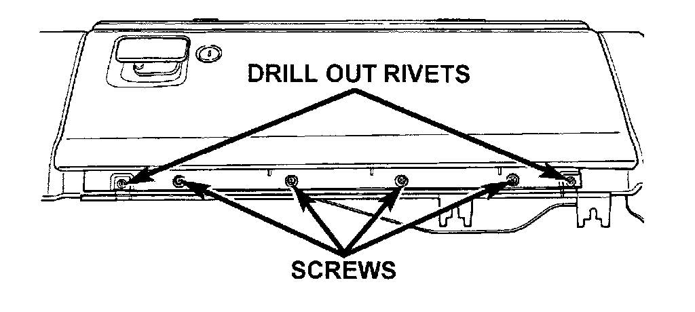

Glove Box
GLOVE BOXWARNING: ON VEHICLES EQUIPPED WITH AIRBAGS, REFER TO PASSIVE RESTRAINT SYSTEMS BEFORE ATTEMPTING STEERING WHEEL, STEERING COLUMN, OR INSTRUMENT PANEL COMPONENT DIAGNOSIS OR SERVICE. FAILURE TO TAKE THE PROPER PRECAUTIONS COULD RESULT IN ACCIDENTAL AIRBAG DEPLOYMENT AND POSSIBLE PERSONAL INJURY.
(1) Disconnect and isolate the battery negative cable.
Glove Box Remove/Install:

(2) Drill out the two rivets securing the glove box hinge to the lower right instrument panel module.
NOTE: The rivets are used to ease assembly during the manufacturing process, but do not require replacement following service.
(3) Remove the four screws securing the glove box hinge to the instrument panel armature.
(4) Release the glove box latch and remove the glove box from the lower right instrument panel module glove box opening.
(5) Reverse the removal procedures to install.